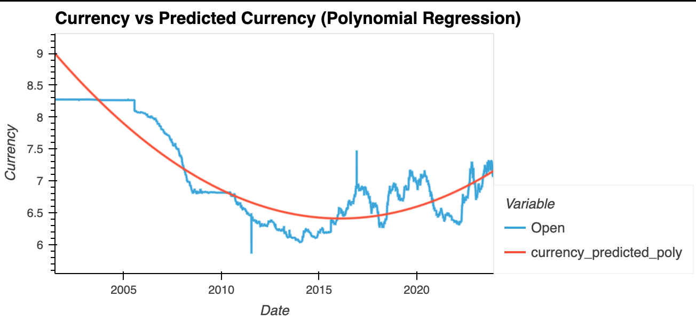

Currency-Projector is a machine learning-driven application that analyzes and predicts global currency trends using historical exchange rate data. Developed as part of a collaborative capstone project during a data analytics boot camp, this tool utilizes time-series forecasting and clustering techniques to assist users in understanding currency behaviors and making data-informed financial decisions.
The project leverages Python-based machine learning libraries along with advanced visualization tools and cloud-based platforms to create predictive models and segment global currencies into meaningful groups.
This project utilized a range of tools and technologies across the data science workflow:
pandas, numpy, matplotlib, and seaborn for data manipulation and visualization.
We began by compiling historical foreign exchange data from over 100 currencies, cleaning and merging the datasets into a single DataFrame with standardized labels for each currency. For initial modeling, we focused on the Chinese Yuan (CNY), filtering the dataset and preprocessing it by removing nulls, dropping irrelevant columns, and converting dates into a numerical format representing days since the dataset’s start.
Exploratory plots revealed long-term currency trends, which informed our selection of predictive models. A Linear Regression model was trained using Scikit-learn to predict closing prices based on time. While it provided a baseline, its performance was limited by the currency’s non-linear behavior.
We then applied a Polynomial Regression model (degree 2), which improved accuracy, as shown by higher R² of 0.9925 and lower RMSE values of 0.0015. Both models were used to forecast future rates, including a specific prediction for January 1, 2024.
To complement the predictive analysis, we prepared the data for K-Means Clustering to group currencies by behavior. This revealed patterns in currency movement and provided macroeconomic insights, with results visualized in Tableau for accessibility.
The Currency-Projector successfully demonstrated the practical application of time-series machine learning models in the financial domain. It not only delivered accurate predictive analytics for currency rates but also provided meaningful clustering insights into regional economic behavior. With further integration of real-time data APIs and expansion into cloud infrastructure, this project could be scaled into a functional fintech solution.
Whether you'd like to collaborate, have a question, or just want to say hello — I’d love to hear from you!